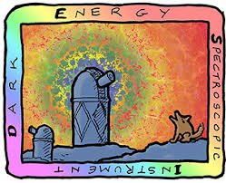

ChangHoon Hahn
Dark Energy Spectroscopic Instrument
 DESI is an upcoming spectroscopic survey that will map the spatial distribution of galaxies over an unprecedented cosmic volume in order to probe fundamental physics. By measuring the clustering of galaxies, DESI aims to precisely measure the growth of structure and constrain dark energy through redshift-space distortions (RSD) and the Baryon Acoustic Oscillations (BAO). DESI recently achieved first light!I'm a co-chair of the DESI Bright Galaxy Survey (BGS), which will observe a magnitude-limited sample of ~10 million galaxies over a third of the sky out to z~0.4. In addition to enabling the most precise measurements of low redshift BAO and RSD, BGS will also provide exciting opportunities for new multi-tracer methods and small-scale clustering analyses.
As part of the Galaxy Quasar Physics working group, I'm currently leading the construction of a fully probabilistic value-added catalog of BGS galaxies (PROVA-BGS) with posteriors of galaxy properties inferred from jointly fitting photometry and spectra. This catalog will allow us to apply hierarchical probabilistic methods and make robust population inference of galaxies. Also, with its statistical power, BGS will produce the largest low redshift galaxy sample and serve as an anchor for upcoming high redshift surveys (e.g. JWST and WFIRST).
Here are some fun videos about DESI: DESI by the numbers, 5000 Robots Map the Universe, Hunt for Dark Energy.
Neutrinos
Galaxy clustering provides a unique opportunity to probe fundamental particle physics. Neutrinos suppress the growth of structure below their free-streaming scale and leave imprints on the galaxy distribution that can be measured to constrain the total mass of neutrinos, Mν. Constraints from cosmology already place significantly tighter constraints than particle physics laboratory experiments. More precise Mν constraint can potentially distinguish between the neutrino mass hierarchies and probe particle physics beyond the Standard Model.The best cosmological constraints currently come from combining CMB and BAO. Mν constraints from CMB rely heavily on precisely constraining the optical depth of reionization, which upcoming CMB experiments will not significantly improve. The next LSS experiments, meanwhile, will expand the cosmic volumes probed with galaxies and have the potential to significantly improve Mν constraints. Standard two-point galaxy clustering analyses, however, are severely limited by degeneracies between Mν and other cosmological parameters. Higher order statistics, such as the bispectrum, help break these degeneracies and tightly constrain Mν. In fact, I demonstrated using the Quijote simulation suite [1909.05273] that the bispectrum alone can constrain Mν >5x tighter than the power spectrum [1909.11107].
Now that I've demonstrated the potential of the bispectrum, I am currently working on a number of projects that are laying down the framework for a full bispectrum analysis of DESI to constrain Mν: including a comprehensive bias model, data compression for the bispectrum, testing paired-fixed simulations, and developing more efficient simulation based inference methods.
Large-Scale Structure
Before DESI, I was a part of SDSS-III BOSS and SDSS-IV eBOSS, where I worked on a wide variety of problems in large-scale structure analyses.Fiber-fed spectrographs of these surveys are essential for collecting millions of redshifts. Fibers, however, can't be placed close to each other on the focal plane, which biases galaxy clustering and prevents accurate constraints on cosmological parameters. I developed methods that successfully account for this "fiber collision" down to smaller scales than ever before [1609.01714].
I've also worked on measuring galaxy clustering of luminous red galaxies [1607.05383] and constructing cosmological simulations for estimating the covariance matrices [1509.06404, 1612.06918, 1701.03765].
Galaxy Formation / Evolution
Galaxies broadly fall into two categories: star-forming and quiescent. Over cosmic time significant fractions of star-forming galaxies rapidly "quench" their star formation and become quiescent [1412.7162]. State-of-the-art galaxy formation models (hydro sims, semi-analytic models, and empirical models) qualitatively reproduce global distributions and scaling relations of galaxies in observations. However, qualitative comparisons to a mixed bag of observations are insufficient for answering key questions in galaxy formation.
As part of the IQ collaboratory, I am leading an effort to forward model observables (photometry and spectra) of simulated galaxies and compare them observation in a data-driven and quantitative approach. As the first step, I compared the relation between star formation rate and stellar mass of star forming galaxies in multiple galaxy formation models in a consistent data-driven fashion to reveal nearly an order of magnitude differences among them [1809.01665]. Next, we will present comparisons of forward model observables for these simulations and galaxies in SDSS at low redshift and CANDELS at high redshift.

Hierarchical structure formation predicted by ΛCDM provides a concrete framework for galaxy formation and evolution: central galaxies reside at the core of dark matter halos while satellite galaxies orbit around them. Empirical models can be constructed in this framework by combining cosmological N-body simulations with observed trends in the galaxy population (e.g. stellar mass function) and used to constrain specific well-posed questions in galaxy formation. Using this approach, I've constrain the timescale of star formation quenching in central galaxies [1609.04398], demonstrate that large-scale "galactic conformity" is driven by contamination [1702.01121], and measure the strength of assembly bias [1705.08458, 1610.01991]. Most recently, I used empirical models to demonstrate that the stellar-to-halo mass relation can be used to constrain the timescale of star formation variability [1910.01644].
Statistical Methods
The standard statistical analysis typically make a major assumption in their parameter inference that the likelihood function is Gaussian. This assumption, which ultimately relies on Central Limit Theorem, breaks down in the low S/N regime. For LSS, I demonstrated that assuming a Gaussian likelihood can significantly bias cosmological parameter constraints and that methods using independent component analysis and Gaussian mixture models can more accurately estimate the likelihood. [1803.06348].Assuming a Gaussian likelihood, or any functional likelihood, is not necessary for probabilistic inference. Simulation-Based inference (SBI) methods enable accurate parameter inference without making assumptions about the likelihood (also known as "liklelihood-free inference"; LFI). One of the most popular LFI methods today is Approximate Bayesian Computation (ABC). I was the first to implement ABC in LSS analyses and demonstrate its feasibility [1607.01782]. I recently organized a LFI workshop that brought together experts from across disciplines to share the latest LFI techniques, use cases and applications, and to discuss open challenges. Continuing from the workshop, I am part of a LFI taskforce whose aim is to develop a general LFI framework and a LFI handbook for cosmology.